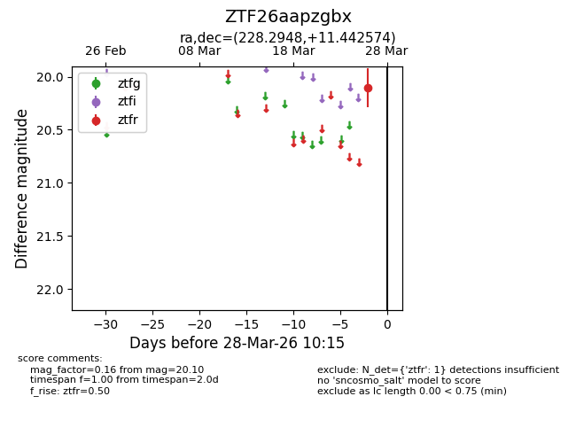
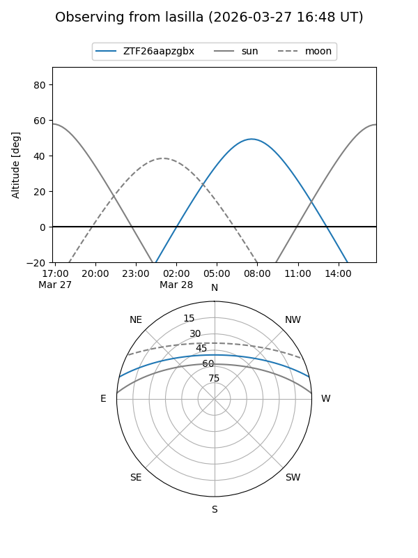
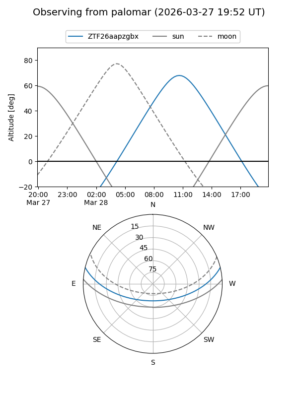

ZTF26aapzgbx
Target ZTF26aapzgbx at 2026-03-28 10:18
Aliases and brokers:
FINK: link
Lasair: link
ALeRCE: link
alt names
ZTF26aapzgbx (ztf,fink_ztf)
Coordinates:
equatorial (ra, dec) = 228.2948,+11.44257
equatorial (HMS+DMS) = 15:13:10.76,+11:26:33.27
galactic (l, b) = (14.6644,+53.24328)
Flags:
Photometry:
last ztfr=20.10
1 ztfr detections
Lightcurve

Visibility


Additional plots